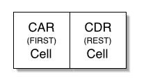
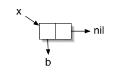
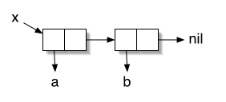
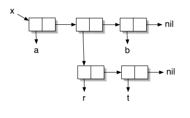
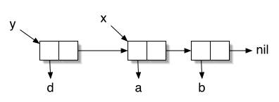
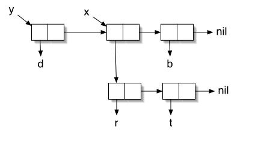
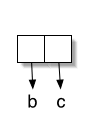
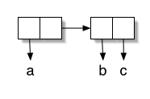
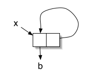

Lisp represents lists internally as singly linked lists. Each node in a Lisp list is called a cons cell. A cons cell consists of two parts: a car and a cdr (pronounced "could-er"). The car points to the element the node is holding. The cdr points to the next cons cell in the list, or else it points to nil, which represents the end of the list. Here's a picture of a cons cell:

The most important three functions which operate on cons cells are: cons which allocates a cons cell, car (otherwise known as first) which gives you the item the car is pointing to, and cdr (otherwise known as rest) which gives you the item the cdr is pointing to. Let's use them to create a simple list, namely (b) :
(setf x (cons 'b nil)) ;;; can also be done with (setf x '(b))

Now x is pointing to the first (and only) cons cell in a list. The only item in the list is b. The car of our cons cell is pointing to b. The cdr of the cons cell is pointing to nil. What do we get if we call (car x)? We get b. What do we get if we call (cdr x)? We get nil. By the way, (car nil) always returns nil and (cdr nil) always returns nil.
Here's a bigger list:
(setf x (cons 'a (cons 'b nil))) ;;; or (setf x '(a b)) or (setf x (list 'a 'b))

How do you do sublists? By pointing the car at the first cons cell in the sublist. For example:
(setf x '(a (r t) b))

Let's go back to (setf x '(a b)). What happens if we cons something onto that? As in:
(setf x '(a b))
(setf y (cons d x)) ;;; y should now be '(d a b)

Notice that x's original list is unaffected. We've just set up y to share it, along with an additional cons cell pointing to d.
You can modify cons cells using various destructive operators (most famously rplaca and rplacd). But the best way to do it is using setf. Remember that setf takes an expression and a value and "sees to it" that the expression returns the value. The way it does this for lists is by modifying the cons cells appropriately. For example, let's say we want to change it so that the first item in x's list points to '(r t), not 'a. Assuming that x and y are set up as they were before,
(setf (first x) '(r t)) ;;; or (setf (car x) '(r t))

Notice that x now reads ((r t) b). But y has also changed because it was sharing that list! Now y reads (d (r t) b). Be careful with setf, it's a destructive operator with side effects that you have to think about first.
What happens if you have the cdr point to something other than another cons cell or nil? For example, what happens if you have the cdr point to, say, c? You could do this with cons, or by using setf to modify a list. For example:
(cons 'b 'c) ;;; WHOA, c is not a list! Also: (setf (rest '(b)) c)

This is called a dotted pair. It's called this because of the way it prints out:
---> (b . c)
The item after the dot is what the last cdr in a list is pointing to, if not nil. What do you get if you call (cdr (cons 'b 'c))? You get the thing that the cdr is pointing to, namely, c. Same thing if you use rest instead of cdr of course. You can enter a dotted pair on the command line as well, as in: '(b . c) You can also have longer lists which end in a dotted pair:
'(a b . c)

If you think about it, you'll realize that the only place where a dotted pair can appear is at the end of a list. So after the period there will be only one atom.
Lastly, you should be aware that you can use setf to do some funky stuff to cons cells. In class I showed how to use setf to manage queues. So some of this funky stuff is useful. Some of it is not. :-) Here's an example that's not all that useful:
(setf x '(b))
(setf (rest x) x)

That's right. You can make circular references. setf doesn't care. So be careful! How do you think Lisp prints this out for you? Try it out on osf1, but let's just say you'll want to be able to press control-C soon. :-)